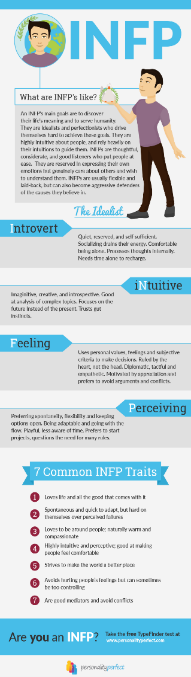
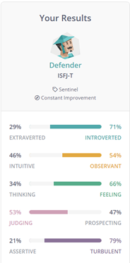
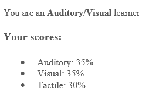

My Personality
Personal Profile
'Personality Perfect' Online Test
Being represented as a 'INFP', I can perform tasks at hand self-sufficiently without the guidance or aid of others. The ability to work alone can be reliable as I do not require may others to produce a reasonably usable result. However, when placed within a team scenario my communication and competence levels may differ.

Myer-Brigg's 16 Personality Test
Being represented as an ISFJ-T by the Myer-Briggs 16 personality test, it presents my character as one which seeks constant improvement. As a result, seeks for errors within systems with ideas on what and how to improve/resolve an issue. Within a team environment, I will be capable of assisting my team mostly in assessing the final components of the project, looking for potential issues and problems within the final solution, looking for methods and techniques which could improve the quality of the project.

Learning Styles Test
Using a online learning test, I have learnt that I am an Auditory/Visual learner meaning I learn best by hearing and listening rather than "doing". As a result, I can learn most efficiently through an online environment whereas a tactile learner may fall. Within a team scenario, I will be able to learn and apply techniques easily online if offline campus is somehow compromised due to another COVID-19 style outbreak.

Contact Details
Name: Ricky Yu Qi Yao
Student number: S3896813
Email: S3896813@student.rmit.edu.au